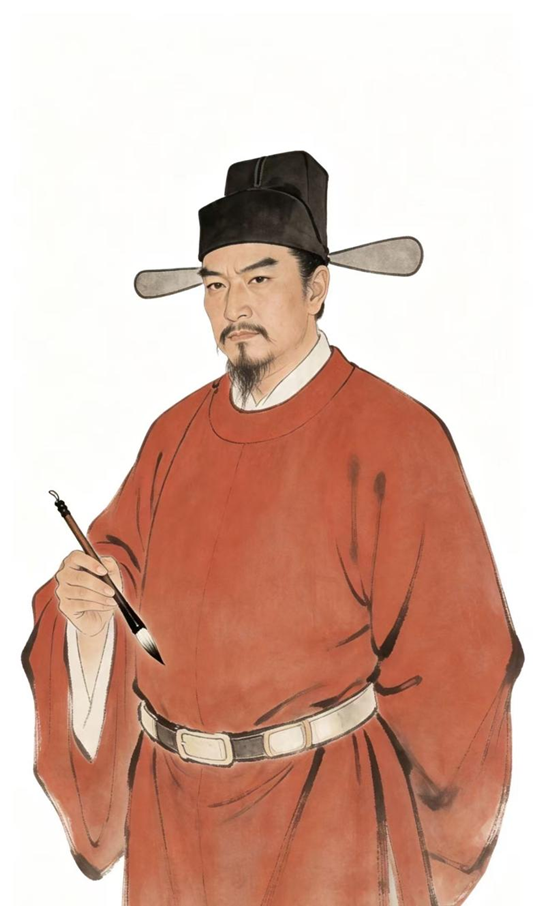
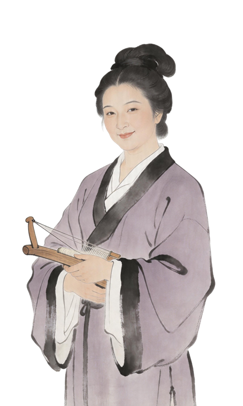
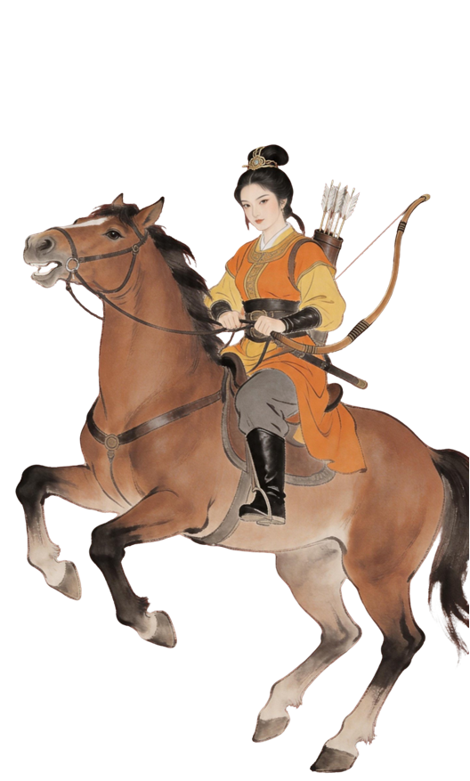
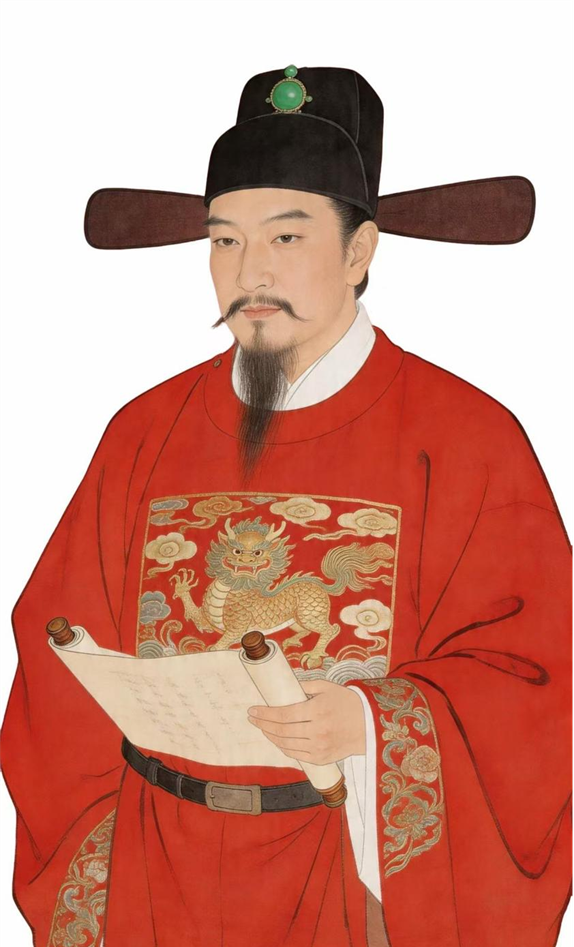
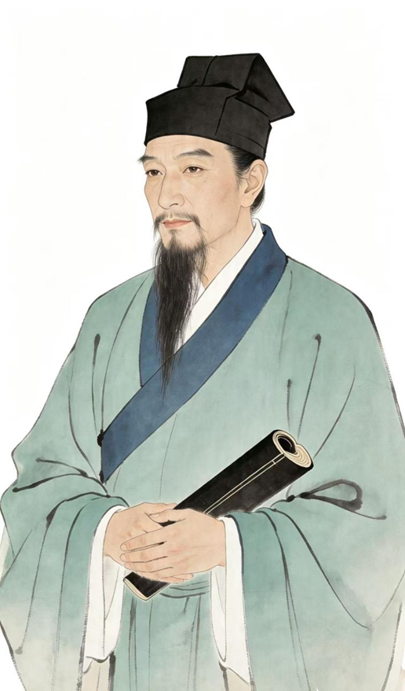

第三层
人·人文之脉
以建筑为媒，文脉传南疆——人与建筑的千年共生
以建筑为媒，文脉传南疆——人与建筑的千年共生
中原文化的南疆传播者 · 点击探索历史人物

唐高宗时期的宰相
606-659
韩瑗出身贵族名门，学识渊博、才华横溢。唐永徽四年(653)，韩瑗官拜同中书门三品，后晋升为侍中并兼任太子宾客。当时，唐高宗打算废黜王皇后，改立武昭仪(武则天)，这一举措遭到长孙无忌、褚遂良等佐命大臣的极力反对。韩瑗进谏劝阻，还为被贬的褚遂良进行辩护，此举激怒了唐高宗和武则天。显庆二年(657)，韩瑗被罢相，并贬为振州刺史，在治所崖城居住，他也是被贬至琼州的首位宰相。
推动崖州文明发展的重要人物

棉纺织技术革新家
宋末元初松江府乌泥泾(今上海徐汇区东湾村)人，我国古代杰出的棉纺织技术革新家。约1261年流落崖州，在崖州生活三十余年，从黎族人民那里学到了一整套棉纺织加工技术。约1295年返回故乡，致力于改革当地落后的棉纺织工具。
创制去籽搅车、弹棉椎弓、三锭脚踏纺纱车等，大幅提升纺纱效率
总结出"错纱、配色、综线、累花"等织造技术，推动淞江发展为全国棉织业中心，被誉为"衣被半天下"

第一巾帼英雄 · 谯国夫人
约522-602年，相传名为冼英，生于高凉郡(今广东省茂名市电白区电城镇山兜村)冼氏家族。是中国南北朝至隋朝初年重要的政治、军事人物，也是岭南(今广东、广西、海南)地区的俚人领袖。
自幼贤明，多谋略，年少时便世袭大首领，因威望显著，南海沿海地区和海南岛共千余部落皆归附其统领
维护国家统一，促进民族团结，被尊为"岭南圣母"，是海南历史上最重要的女性政治家

岭海巨儒 · 钟崖州
1476-1544年，字仲实，号筠溪。原籍琼山县，出生于崖州高山所(今海南省三亚市崖州区水南村)。幼年丧母，寄居外亲黄家，又名黄芳。自幼聪颖好学，10岁入崖州州学。
明弘治十四年乡试第二，正德三年殿试二甲第三，选翰林院庶吉士、授编修，时人誉"丘文庄后又一南溟奇才"
为官27载，历任翰林院编修、宁国府推官、钦差总提督仓场户部右侍郎等职，政绩显著，官声远扬

心学巨擘 · 千古完人
名守仁，字伯安，明代杰出的思想家、文学家、军事家、教育家。年少立志成圣，历经坎坷，于龙场悟道，开创心学，提出"心即理""知行合一""致良知"等核心思想。
打破程朱理学桎梏，为儒家思想注入新活力，是明代心学集大成者
虽未直接长居崖州，但在江西、广西等地平乱时与崖州籍名臣钟芳多有交集，二人思想碰撞，共同推动明代学术多元发展